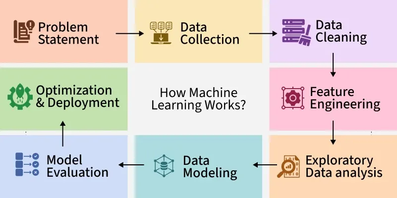
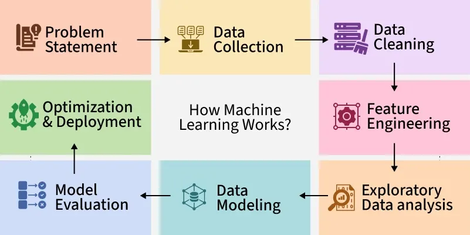

My Future Career in Data Science
Why I Want to Pursue a Career in Data Science
I am passionate about pursuing a career in data science because it combines programming, statistics, and problem-solving to uncover insights from data. Data science is used in nearly every field, from healthcare to sports analytics, and offers endless opportunities to learn and innovate. I’m especially drawn to how data can be used to make smarter decisions, improve products, and solve real-world problems. Whether it's predicting customer behavior, detecting fraud, or personalizing recommendations, the impact of data science is powerful and far-reaching.
What Data Scientists Do
Data scientists analyze large datasets, create predictive models, and communicate results that drive decision-making. They often work with tools such as Python, R, SQL, and machine learning frameworks. In addition to technical skills, they need strong critical thinking to identify patterns and relationships in complex data. Their work involves cleaning messy datasets, building visualizations, and using statistical techniques to uncover insights. Collaboration is also a big part of the job—data scientists frequently work alongside business analysts, engineers, and product managers to align their insights with real business goals.
Key Skills for Data Scientists
- Programming
- Data Visualization
- Machine Learning
- Statistics and Probability
- SQL and Databases
- Communication
Career Paths in Data Science
There are many roles you can pursue in the data science field, including:
- Data Analyst
- Machine Learning Engineer
- Data Engineer
- Business Intelligence Analyst
- AI Research Scientist
Images of Data Science
 


Watch a Short Video About Data Science
Useful Links for Learning Data Science
- Kaggle – Practice datasets and competitions
- Coursera – Online courses from universities
- Towards Data Science – Articles and tutorials
- SQLBolt – SQL lessons for beginners